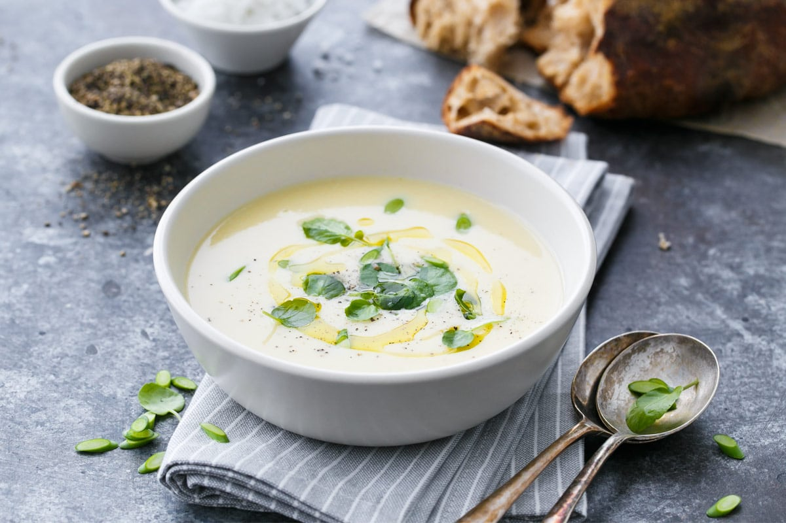

Roasted Potato Garlic Soup

Back to overview
Description
A stick to your ribs meal! Serve with cheese, bacon or herbs.
Ingredients
- 6 potatoes, peeled and cut into 1 inch pieces
- 2 tablespoons olive oil, divided
- ½ teaspoon ground black pepper
- 1 onion, chopped
- 6 cloves garlic, peeled
- 3 cups chicken broth
- 1 cup water
- 1 cup whole milk
- Salt to taste
Steps
- Preheat oven to 220 degrees C.
- Place potatoes in a shallow roasting pan and drizzle with 1 tablespoon olive oil. Sprinkle with pepper; stir to coat. Bake for 25 minutes, or until potatoes are browned. Reserve 1 cup of roasted potatoes.
- In a 3 quart saucepan heat remaining oil; saute onions for 5 minutes. Add potatoes and garlic and stir in broth and water. Bring to a boil, reduce heat and simmer, uncovered, for 20 minutes.
- Spoon half of broth mixture into a blender; blend until nearly smooth. Repeat with remaining mixture; return all to pot. Stir in milk and season with salt to taste. Ladle into bowls and top with reserved roasted potatoes.
Back to overview